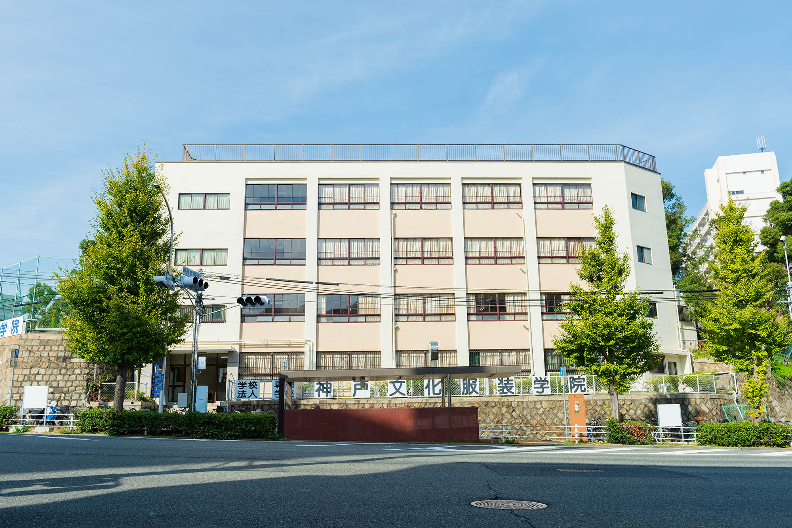

Reasons
選ばれる理由
専門学校 神戸文化服装学院が
選ばれる理由
選ばれる8つの理由

Reasons
1
技術力 / 服を自由自在に創れるように。
基礎がしっかり学べるから、
高レベルな技術が身につけられます。
高レベルな技術が身につけられます。
服作りに必要な技術や知識を、基礎中の基礎から学びます。はじめて学ぶ人でも基礎をしっかりと身につければ、高レベルな技術を習得する事は決して難しい事ではありません。
Reasons
2
指導方針 / “ついていけない”をゼロ化。
個人のレベルに合わせて指導するから、
ついていけないという事はありません。
ついていけないという事はありません。
人の成長速度には個人差があって当たり前。だから神戸文化服装学院では少人数制で授業を行い、一人一人のペースに合わせ、ゆっくりでも確実に理解できるようにします。
Reasons
3
資 格 / 資格取得を徹底サポート。
協会認定校だから、洋裁技術認定の
実技試験が免除されます。
実技試験が免除されます。
神戸文化服装学院は協会認定校のため、洋裁技術認定の実技試験が免除されます。他にも様々な検定があり、それら検定を取得できるようにしっかりとサポートやアドバイスを行います。
Reasons
4
学 費 / 金銭面で諦めて欲しくない。
月謝制を採用しているから、
一度に多額の学費は必要ありません。
一度に多額の学費は必要ありません。
学費は、専門学校では珍しい月謝制を採用しており、7月8月を除いて一ヶ月分ずつの納入ですので、一度に多額の金額を納める必要はありません。
Reasons
5
研 修 / 研修を通して仕事を知る。
インターンシップで、
現場を体験できることもあります。
現場を体験できることもあります。
高学年では実際の現場に入り、必要な知識や能力を体験することもあります。、卒業後、即戦力となれる素養を身につけます。
Reasons
6
展 示 / 学生作品が展示されます。
企業のイベントに参加して、
作品が展示されます。
作品が展示されます。
学生作品が、企業のイベント等に参加することで、社会とのつながりを学びます。
Reasons
7
交通至便 / 交通に便利な立地です。
地下鉄駅前に校舎があり、
通学に便利です。
通学に便利です。
JR、阪急、阪神、神戸電鉄、山陽電鉄等の最寄駅から徒歩10分程度で通学ができます。
Reasons
8
環 境 / 日本有数のファッション都市・神戸。
学院の隣には、
大型図書館もある最適な学び舎。
大型図書館もある最適な学び舎。
校舎は日本有数のファッション都市・神戸に立地。学院の隣には神戸を代表する大型の図書館があります。
兵庫県唯一の
文化服装学院(東京)の連鎖校。
日本のファッション業界をリードしている文化服装学院と絶えず交流をはかり、テキスト等教材の多くは同一のものを使用してファッション都市神戸の連鎖校として指導しています。
MOVIE